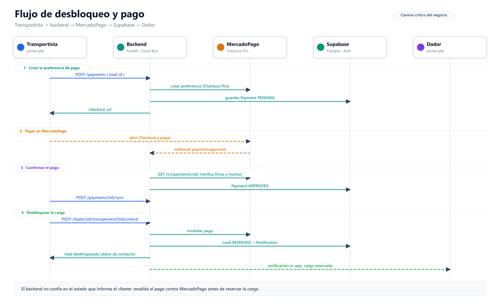

Smartruck
Documentación del proyecto Smartruck, desarrollado para la materia Trabajo Profesional de la Facultad de Ingeniería de la Universidad de Buenos Aires (FIUBA) — Grupo 179.
Este sitio reúne información funcional y técnica: objetivos, arquitectura, requerimientos, desarrollo, manuales, proceso del equipo (wiki) y documentación por repositorio.
Prefijos de trabajo
| Prefijo | Producto |
|---|---|
D | Dador |
T | Transportista |
Navegación rápida
| Sección | Para qué |
|---|---|
| Descripción del proyecto | Objetivo y alcance |
| Wiki del equipo | Jerarquía, DoR, DoD, tickets |
| Repositories | Backend, dador, transportista, templates |
| Guía de desarrollo | Setup y flujo de trabajo |
Equipo
Roles y responsabilidades: wiki/equipo/roles.md.
Descripción del proyecto
Objetivo
Smartruck es una plataforma logística para la publicación, cotización, gestión y desbloqueo de ofertas de carga, con pagos integrados.
Se desarrolla en el marco de Trabajo Profesional (FIUBA). En esta sección se documentan el problema, los objetivos del sistema y el alcance de la entrega.
Productos / actores
| Prefijo | Producto | Repo principal de UI |
|---|---|---|
D | Dador (shipper) | smartruck-dador |
T | Transportista | smartruck-transportista |
API compartida: smartruck-backend.
Alcance
Esta documentación se actualiza con la evolución del producto y es referencia para el equipo, docentes y usuarios.
Cómo se organiza el trabajo
Épica (milestone de roadmap) → historia (Como/Quiero/Para, con criterios en Gherkin y US Points), trabajada en el repo que corresponde. Detalle en Jerarquía.
Roles
- Roles del equipo de desarrollo: wiki/equipo/roles.md
- Actores del sistema (dador, transportista, etc.): completar aquí a medida que se cierren
Arquitectura
Esta página describe la arquitectura de Smartruck a octubre de 2026. Se apoya en el código de los repositorios y en la infraestructura Terraform de smartruck-infra: lo que sigue es lo que está desplegado y en uso, no una propuesta.
Vista general
Figura 1. Diagrama interactivo generado con Archify. Abrir en una pestaña nueva - PNG transparente de respaldo.

| Banda | Componentes | Responsabilidad |
|---|---|---|
| 01 - Portales | Dador, Transportista, Backoffice, Landing | Interfaz web por rol. Los tres portales autenticados consumen la API; la landing es pública y deriva a los portales. |
| 02 - Borde | Cloudflare (DNS, TLS, rate limit de /routes), Geoservice (Worker) y API Gateway | El frontend y el backend consumen Geoservice directamente para todo lo geográfico; el API Gateway expone el backend para el resto de la API. |
| 03 - Núcleo | smartruck-backend | Reglas de negocio y transacciones de cargas, usuarios, pagos, documentos y notificaciones. |
| 04 - Datos e integraciones | Supabase (Auth, PostgreSQL, Storage), MercadoPago, Mapbox, Nominatim | Identidad, persistencia, archivos y servicios externos. |
| 05 - Observabilidad | stdout JSON + correlation ID, Cloud Logging, Pub/Sub, Dataflow, Datadog (us5) y logs de Render | Trazabilidad del backend y de los portales. |
La topología de test y de prod vive en smartruck-infra (módulos artifact_registry, cloud_run, api_gateway, wif, cloudflare_dns, cloudflare_waf, datadog_log_forwarding y render_datadog_log_stream).
Portales
- Dador (
smartruck-dador): publica cargas, cotiza, gestiona ofertas y sigue pagos. - Transportista (
smartruck-transportista): busca cargas, calcula viajes, desbloquea ofertas con pago y gestiona flota y viajes. - Backoffice (
smartruck-backoffice): administración de usuarios, verificación de documentos y rolADMIN. - Landing (
landing-page): sitio público con derivación al dador y al transportista.
Los tres portales autenticados usan TanStack Start + React. Cada uno consume tres servicios por separado, sin pasar por el backend para todo:
| Destino | Qué consume el portal | Cómo llega |
|---|---|---|
| Supabase Auth | Sesión y JWT del usuario | VITE_SUPABASE_URL y VITE_SUPABASE_ANON_KEY |
| Geoservice | Rutas, distancias, catálogo de localidades, autocompletado de ciudades y asociación del pin a la localidad más cercana | VITE_GEO_SERVICE_API, o el hostname de Cloudflare según VITE_APP_ENV |
| Backend | Cargas, ofertas, pagos, documentos y perfil | VITE_SMARTRUCK_BACKEND_API por API Gateway |
El frontend no calcula distancias ni estimaciones: cuando Geoservice no responde, la interfaz muestra "distancia no disponible".
Borde
- Cloudflare: DNS de
smartruck.tech, TLS y rate limiting sobre el endpoint de rutas (120 req/min por IP y host, con ventana de 10 s). - Geoservice (Cloudflare Worker, TypeScript; repositorio): dueño de la geografía de la plataforma.
- Endpoints:
/geo/routes(y el alias legacy/routes),/geo/routes/batch,/geo/localities(búsqueda,resolve,nearestycatalog),/geo/healthy/geo/version. - Catálogo cerrado de 24 provincias y 150 localidades con coordenadas, y 11.175 rutas precargadas con trazado vial.
- Cascada de resolución: caché de Cloudflare (
caches.default) → tablaroutesdel schemageoen Supabase (vía PostgREST consupabase-js) → proveedor Mapbox Directions (si hay token) → estimación geodésica marcada conis_estimation. - Los proveedores y las estimaciones no se cachean (
no-store). AUTH_REQUIRED=trueexige un JWT de Supabase (ES256, JWKS,audience=authenticated); los healthchecks y/versionquedan públicos.
- Endpoints:
- API Gateway (GCP): expone el backend en HTTPS y lo invoca con
run.invokersobre Cloud Run privado.
Geoservice tiene dos consumidores, y ninguno pasa por el API Gateway: el frontend lo llama por el hostname de Cloudflare con la sesión del usuario, y el backend lo llama con su propia credencial de servicio para cotizar y para sincronizar el catálogo de localidades.
Núcleo
smartruck-backend es un monolito hexagonal en Python 3.12 con FastAPI, SQLModel y Alembic sobre PostgreSQL (Supabase). El código se organiza en:
| Capa | Rol |
|---|---|
domain/ | Modelos, puertos, excepciones y reglas de negocio. |
application/ | Casos de uso, DTOs y LogManager. |
infrastructure/inbound/ | Adaptadores de entrada: HTTP controllers, DTOs, mappers y middlewares. |
infrastructure/outbound/ | Adaptadores de salida: persistencia PostgreSQL, Storage, gateways de pago y clientes HTTP. |
Agrupa funcionalmente identidad y perfiles, cargas y cotizaciones, pagos y desbloqueo, y documentos y confianza. Corre en Cloud Run privado detrás del API Gateway.
Datos e integraciones
- Supabase Auth: emite JWT firmados con ES256 y publica JWKS.
- Supabase PostgreSQL: datos de negocio, tabla local con los ids válidos de localidad y schema
geocon provincias, localidades y rutas que consume Geoservice. - Supabase Storage: bucket privado
documents; el backend firma URLs de subida y de lectura. - MercadoPago: Checkout Pro, webhook y consulta de pagos.
- Mapbox: geocodificación y Directions. Nominatim: fallback de geocodificación.
Observabilidad
- El backend emite logs JSON a stdout con
LogManager. Un middleware agrega un correlation ID por request. - En Cloud Run, los logs van a Cloud Logging y se reenvían por Pub/Sub y Dataflow a Datadog (
us5). - Los portales desplegados en Render envían sus logs a Datadog mediante un log stream de workspace.
Componentes por repositorio
| Repositorio | Stack | Despliegue | Rol |
|---|---|---|---|
| smartruck-backend | Python 3.12 - FastAPI - SQLModel - Alembic | Cloud Run privado detrás de API Gateway | API REST y reglas de negocio. |
| Geoservice | TypeScript - Cloudflare Workers - supabase-js - jose | Cloudflare Workers | Ruteo, distancias y localidades. |
| smartruck-dador | TanStack Start - React | Render | Portal del dador. |
| smartruck-transportista | TanStack Start - React | Render | Portal del transportista. |
| smartruck-backoffice | TanStack Start - React | Render | Administración, verificación y documentos. |
| landing-page | React - Vite | Render | Sitio público y derivación. |
| smartruck-infra | Terraform (GCP, Cloudflare, Render) | — | Infraestructura como código. |
smartruck-ai y los templates (cloud-template, infra-template) son herramientas de proceso del equipo, no componentes del runtime del producto.
Flujos principales
Autenticación y autorización
- Supabase Auth emite un JWT ES256 para el usuario.
- Los frontends envían
Authorization: Bearer <token>aVITE_SMARTRUCK_BACKEND_API. - El backend valida firma, issuer y vigencia contra el JWKS de Supabase. El backoffice exige además rol
ADMIN. - Geoservice valida el mismo JWT cuando
AUTH_REQUIRED=true; los endpoints de salud y versión quedan públicos.
Cotización, publicación y ruteo
Hay tres caminos distintos según la operación:
- Consultar rutas o distancias en la interfaz: el frontend llama a Geoservice por el hostname de Cloudflare con la sesión del usuario, y usa el catálogo de localidades embebido en el build. La distancia no se calcula en el cliente.
- Cotizar (
POST /loads/quote):QuoteLoadUseCaseusa el puertoRouteDistancea través deRoutesServiceDistance, que llama a Geoservice (ROUTES_SERVICE_BASE_URL). El precio sugerido sale dePricing. - Publicar (
POST /loads/offerer/{offerer_id}):CreateLoadUseCaseresuelve origen y destino conLocationResolvery guarda ids de localidad (origin_locality_id,destination_locality_id), no nombres ni distancias. El backend valida esos ids contra su tabla local de ids válidos.
La carga es una referencia al catálogo, no una copia: la distancia y el trazado se leen siempre desde Geoservice, de modo que cotizar y mostrar coinciden.
Búsqueda de cargas
SearchLoadsUseCase (expuesto como POST /loads/search) resuelve el matching de forma naive: obtiene todas las localidades y todas las cargas, filtra las activas, calcula distancias con haversine × 1.25 y puntúa en memoria. No usa PostGIS ni la vista matching_loads. La mejora con poda espacial y scoring sobre el servicio geográfico es trabajo abierto del backend.
Desbloqueo y pago

Figura 2. Camino crítico desde la creación de la preferencia de pago hasta la reserva de la carga. Versión editable: SVG.

- El transportista bloquea la oferta (
POST /loads/{load_id}/transporters/{transporter_id}/lock) y consulta el costo de desbloqueo (GET /loads/{load_id}/unlock-fee). - El frontend pide el pago (
POST /payments). El backend crea unPaymenten estadoPENDINGy una preferencia en MercadoPago Checkout Pro, y devuelvecheckout_url. - El transportista paga en Checkout Pro. MercadoPago envía el webhook
POST /payments/mercadopago/webhook; el backend valida la firma y consulta el pago al proveedor. - El frontend reconcilia con
POST /payments/{payment_id}/sync. - El transportista confirma el desbloqueo (
POST /loads/{load_id}/transporters/{transporter_id}/unlock).UnlockLoadUseCaserevalida contra MercadoPago el estado, la referencia externa, el importe y la moneda; recién entonces marca el pago como aprobado y la carga comoRESERVED. - El backend crea una notificación in-app para el dador.
El backend no confía en el estado que informa el cliente: la reserva exige un pago efectivamente aprobado por MercadoPago.
Documentos y verificación
- El usuario pide una URL de subida (
POST /documents/upload-url) y el backend registra la intención y firma la URL. - El cliente sube el archivo directo a Supabase Storage (bucket privado
documents). - El cliente confirma (
POST /documents/{document_id}/confirm); el backend valida tamaño y tipo. - El usuario puede obtener una URL de lectura firmada (
GET /documents/{document_id}/read-url); el backoffice verifica los documentos desde sus propios endpoints de administración.
Trabajo pendiente
- El matching del backend sigue puntuando en memoria; la mejora es Postgres con PostGIS y el lote de Geoservice.
- Sin circuit breaker ni pooling HTTP en
RoutesServiceDistance(usaurllib). - Sin PWA ni service worker en los portales.
Enlaces
- Repositorios: smartruck-backend, Geoservice, smartruck-dador, smartruck-transportista, smartruck-backoffice, landing-page, smartruck-infra.
- Convenciones de logging: Logging (hexagonal).
- Detalle por repositorio: Repositories.
Vistas para la presentación
Estas vistas se prepararon a partir del modelo de arquitectura validado en Archify, como PNGs transparentes individuales de 3200 × 1800; muestran solo los diagramas, sin títulos ni encabezados, y usan tipografía grande. Los diagramas distinguen las llamadas directas del frontend y del backend a Geoservice.
- 01 - Vista de despliegue
- 02 - Portales y API Gateway
- 03 - Camino geográfico
- 04 - Backend e integraciones
- 05 - Pagos con MercadoPago
- 06 - Identidad, datos y archivos
- 07 - Observabilidad


Requerimientos
Los requerimientos de producto se expresan como épicas e historias (D-… / T-…). Ver Jerarquía y plantillas.
Requerimientos funcionales
Los requerimientos funcionales de Smartruck se documentarán en esta sección (y/o se enlazarán a historias del board).
Requerimientos no funcionales
También se describirán aquí los requisitos de seguridad, disponibilidad, rendimiento, mantenibilidad y experiencia de usuario.
Guía de desarrollo
Requisitos previos
Dependen del repo. Resumen:
| Repo | Stack principal |
|---|---|
| smartruck-backend | Python 3.12, FastAPI, Docker / Dev Containers |
| smartruck-dador | Node 22, TanStack Start, Vite |
| smartruck-transportista | Node / Bun, Vite |
| smartruck-audit | Grafana + Loki + Promtail (Docker Compose) |
Instalación
Seguí el README de cada repositorio (comandos de setup, dev_app, tests y Dev Containers).
Flujo de trabajo
- Las historias viven en el Board de
roadmap, con sus criterios de aceptación como escenarios Gherkin (Plantilla de ticket). - Antes de empezar, la historia cumple el Definition of Ready y pasa a
In progress. - Se trabaja en
main, sin ramas de feature ni pull requests, con commits atómicos y un push por commit (Conventional Commits). - Con la feature terminada, se libera a
testcon./scripts/release_to_test patch|minor|majory la historia pasa aIn reviewcon las horas insumidas (Workflow de entrega). - Al final del sprint, el equipo libera a
prodcon./scripts/release_to_prody las historias pasan aDone(Definition of Done).
Para hacerlo con un agente de IA, ver Desarrollo con agentes.
Convenciones
| Tema | Dónde está |
|---|---|
| Plantillas de ticket | wiki/tickets/plantilla-ticket.md |
| Estimación (story points) | wiki/tickets/estimacion.md |
| Logging (hexagonal) | wiki/proceso/logging.md |
| Gherkin (BDD) | wiki/proceso/gherkin.md |
| Glosario | wiki/equipo/glosario.md |
Manual de usuario
Esta sección explicará cómo utilizar Smartruck, incluyendo el acceso al sistema, los flujos principales y el tratamiento de errores frecuentes.
Wiki del equipo
Convenciones de trabajo compartidas (proceso, tickets, roles). Independiente del código de cada repo.
Quick path
- Jerarquía — épicas (milestones) e historias de
roadmap - Definition of Ready
- Definition of Done
- Plantilla de ticket
- Workflow de entrega —
main, release atesty aprod, estados del Board - Desarrollo con agentes —
/nueva-feature
Secciones
Proceso
| Doc | Contenido |
|---|---|
| jerarquia.md | Épicas, historias, prefijos, IDs y completitud |
| definition-of-ready.md | Cuándo una historia puede empezar |
| definition-of-done.md | Cuándo algo está terminado (productivo) |
| workflow-entrega.md | Trabajo en main, release a test y a prod, estados del Board |
| desarrollo-con-agentes.md | Cómo arrancar una feature con un agente: /nueva-feature y sus fases |
| conventional-commits.md | feat / fix / refactor + número de historia; commits atómicos a main |
| logging.md | Dónde loguear: controladores y repositorios |
| gherkin.md | Forma de los .feature: Antecedentes, Regla, Dado/Cuando/Entonces |
Tickets
| Doc | Contenido |
|---|---|
| plantilla-ticket.md | Cuerpo de una user story: backend con Gherkins, UI y spike |
| tipos-de-ticket.md | Épica, historia de backend, historia de UI y spike |
| estimacion.md | US Points, Estimate (hs) y Spent (hs) de las historias |
| automatizacion-historias.md | Cómo crear una historia en roadmap: numeración automática, tags front+back/crear front/crear back, spikes y sub-issues |
Equipo
| Doc | Contenido |
|---|---|
| roles.md | Responsabilidades |
| glosario.md | Términos del dominio y del proceso |
Jerarquía de trabajo
Todo el trabajo se modela como user stories en el repo smartruck-ar/roadmap, agrupadas en épicas (milestones) y planificadas en el Board del sprint. No hay tasks: cada historia se trabaja directamente en el repo de producto que corresponde.
Modelo
Épica milestone de roadmap D.2 - Gestión de carga
└── Historia issue "user story" D.2.8 - Como dador, Quiero …, Para …
├── Contraparte de UI UI-D.2.8 - Como dador, Quiero …, Para …
└── Sub-historia (sub-issue) D.2.8.1 - …
Prefijos
El prefijo sale del milestone y se hereda en toda la cadena.
| Prefijo | Producto o grupo | Milestones |
|---|---|---|
D | Dador | D.1 … D.7, D.X |
T | Transportista | T.1 … T.7, T.X |
R | Servicio de rutas | R.1 |
B | Backoffice | Backoffice |
S | Spikes (contador único, sin producto) | SPIKES |
IDs
| Nivel | Formato | Ejemplo | Quién lo asigna |
|---|---|---|---|
| Épica | <Prefijo>.<N> - <nombre> | T.3 - Gestion y visualizacion de flota | El equipo, al crear el milestone |
| Historia | <épica>.<M> - <título> | T.3.14 - Como transportista, … | La automatización, al asignar el milestone |
| Historia de UI | UI-<épica>.<M> - <título> | UI-T.3.14 - Como transportista, … | La automatización (prefijo UI- en el título o tags front+back / crear front) |
| Sub-historia | <historia>.<K> - <título> | T.1.1.1 - … | La automatización, si es sub-issue de una historia numerada |
| Spike | S.<N> - <título> | S.3 - … | La automatización, en el milestone SPIKES |
La historia de backend y su contraparte de UI comparten el número: el contador es único por milestone. Una vez numerado, el título no cambia.
Qué lleva cada nivel
Épica (milestone)
- Objetivo de negocio amplio que agrupa historias.
- No se estima ni tiene repositorio.
Historia (user story)
- Título
Como …, Quiero …, Para …; la automatización le agrega el número y el labeluser story. - Backend: los criterios de aceptación son sus escenarios Gherkin (Plantilla de ticket).
- UI (
UI-): referencia la historia de backend asociada. - En el Board lleva
Status,Sprint,US Points,Priority,Estimate (hs)ySpent (hs). - Se trabaja en el repo de producto que corresponde, en
main(Workflow de entrega).
Spike
- Investigación o decisión con un entregable concreto (documento o decisión), sin código de producto.
- Milestone
SPIKESy labelspike.Gherkins: no aplica.
Completitud
Done implica ambiente productivo. Detalle en DoD.
| Nivel | Se completa cuando… |
|---|---|
| Historia | Está liberada a prod con el release del sprint |
| Épica | Todas sus historias están Done |
Ejemplo
T.3 - Gestion y visualizacion de flota (milestone)
T.3.12 - Como transportista, Quiero registrar la capacidad en toneladas de mis remolques, …
UI-T.3.12 - Como transportista, Quiero registrar la capacidad en toneladas de mis remolques, …
T.3.13 - Como transportista, Quiero desasignar un camión o un remolque de una carga, …
Los commits llevan el número de la historia en el scope: feat(T.3.12): … (Conventional Commits).
Next step
Definition of Ready · Automatización de historias
Definition of Ready (DoR)
Una historia solo entra a desarrollo si cumple este checklist. Recién ahí pasa a Ready en el Board.
Historia lista para trabajar (Ready)
-
Issue en
roadmapcon milestone y número asignado por la automatización -
Título
Como …, Quiero …, Para …y contexto en la descripción (Plantilla de ticket) -
Backend: Gherkins pusheados a
maindel repo y link al.featureen la descripción - UI: referencia a la historia de backend asociada
-
US Pointscargados (Estimación) -
Priorityasignada -
Dependencias declaradas (
Bloqueado por #<N>) y desbloqueadas
Gherkins
En una historia de backend, los criterios de aceptación son sus escenarios Gherkin. Los .feature tienen que estar pusheados a main antes de considerarla Ready, y la descripción tiene que tener el link al archivo. El formato del feature sigue la Convención de Gherkin. Si no aplica (spike), indicar Gherkins: no aplica.
Ciclo de vida en la descripción de una user story de backend: al crearla, los escenarios van escritos en la descripción; antes de Ready se pushean a main; una vez en main, el bloque se reemplaza por el link al .feature. Detalle en Plantilla de ticket.
Al comenzar la historia
-
Pasarla a
In progressen el Board -
Cargar
Estimate (hs)(horas hombre previstas)
Eso es distinto de los US points: los puntos son esfuerzo relativo; las horas son la estimación temporal al arrancar.
Qué no es Ready
| Señal | Acción |
|---|---|
| Historia de backend sin Gherkins | Escribirlos y devolverla a refinamiento |
Gherkins solo en la descripción, no en main | Pushear el .feature a main y reemplazar el bloque por el link |
Sin US Points | Estimar antes de planificar |
Sin Priority | Asignarla |
| Bloqueada por otra historia abierta | Esperar o replanificar |
Checklist rápido (pre-sprint)
- Cada historia planificada cumple DoR
-
Gherkins en
maincuando corresponde - Equipo alineado en alcance
Next step
Cuando el trabajo termina → Definition of Done
Definition of Done (DoD)
Una historia está Done cuando está en ambiente productivo. Una épica está Done cuando todas sus historias lo están.
Regla de oro
Done = en productivo (además de cumplir CA y tests). Productivo se libera a mano, con el equipo, al final del sprint (Workflow de entrega).
| Estado en el Board | Significa |
|---|---|
In progress | En desarrollo en main |
In review | Liberado a test con release_to_test y pipeline en verde |
Done | Liberado a prod con release_to_prod al final del sprint |
| Nivel | Done cuando… |
|---|---|
| Historia | Está desplegada en productivo y cumple el checklist de abajo |
| Épica (milestone) | Todas sus historias están Done |
Historia Done
-
Cumple todos los criterios de aceptación (escenarios Gherkin en verde, sin
@wip) -
Código pusheado a
maindel repositorio asociado - Tests acordados en verde (incl. aceptación / Gherkin si aplica)
-
Validada en
test(historia enIn review) - Desplegada en ambiente productivo con el release del sprint
-
Spent (hs)cargado con las horas hombre insumidas -
README del repo y
docsactualizados si aplica
Horas
| Momento | Campo | Qué es |
|---|---|---|
| Al comenzar | Estimate (hs) en el Board | Previsión en horas hombre |
Al liberar a test (In review) | Spent (hs) en el Board | Tiempo real dedicado en horas hombre |
Sin Spent (hs) cargado, la historia no se considera Done.
Checklist de cierre
-
Estado actualizado en el Board (
In reviewal liberar atest,Doneal liberar aprod) -
Evidencia de deploy en productivo (pipeline de
proden verde, versiónvX.Y.Z) - Horas estimadas (al inicio) e insumidas (al cierre) registradas
- Número de la historia en el scope de los commits (Conventional Commits)
Next step
Releases y estados → Workflow de entrega
Workflow de entrega
Cómo una historia pasa de Ready a producción. No hay ramas de feature ni pull requests: se trabaja en main y los ambientes se mueven con los scripts de release.
Quick path
- Tomar una historia
Readydel Board y pasarla aIn progress. - Implementar en
main, con commits atómicos y un push por commit (Conventional Commits). - Con la feature terminada y la suite en verde, liberar a
test:./scripts/release_to_test patch|minor|major. - Con el pipeline de
testen verde, pasar la historia aIn reviewy cargar las horas insumidas. - Al final del sprint, el equipo valida todo en
testy libera aprod:./scripts/release_to_prod. Las historias liberadas pasan aDone.
Ramas y ambientes
| Rama | Para qué | Cómo se mueve |
|---|---|---|
main | Integración. Acá se trabaja | Push directo, un push por commit |
test | Ambiente de test | ./scripts/release_to_test patch|minor|major |
prod | Ambiente productivo | ./scripts/release_to_prod, a mano, con el equipo, al final del sprint |
Nunca se pushea a mano a test ni a prod. Los repos de documentación y soporte (docs, roadmap, smartruck-ai, smartruck-infra, audit) solo tienen main y no se liberan.
Release a test
release_to_test corre desde main limpio y al día:
- Sube la versión (
patch,minoromajor). - Commitea
tag:vX.Y.Zy crea el tag. - Pushea
mainytestde forma atómica. El pipeline detestdespliega esa versión.
| Cambio desde la última versión | Nivel |
|---|---|
| Solo correcciones | patch |
| Funcionalidad nueva compatible | minor |
| Contrato roto (API o esquema incompatible) | major |
Release a prod
release_to_prod no crea versión nueva: promueve lo que está en test a prod. Exige que main y test apunten al mismo commit. Lo corre el equipo al final del sprint, con todo validado en test.
Estados en el Board
| Momento | Status | Horas |
|---|---|---|
| Se empieza la historia | In progress | Estimate (hs) |
La versión está en test y el pipeline quedó verde | In review | Spent (hs) con las horas insumidas |
El equipo liberó a prod al final del sprint | Done | — |
Checklist antes de liberar a test
-
Escenarios de la historia en verde, sin
@wip -
./scripts/run_all_testsen verde -
README del repo y
docsactualizados si el cambio los afecta - Sin secretos ni configs locales en los commits
Next step
Cuándo está terminado → Definition of Done
Desarrollo con agentes
Cómo arrancar y llevar una feature con un agente de IA (Claude Code u OpenCode) usando el setup del repo smartruck-ai.
Quick path
- Instalar el setup siguiendo la guía de instalación del README de
smartruck-ai. - Abrir el agente con el wrapper de la carpeta de repos:
<carpeta>/bin/claude-smartrucko<carpeta>/bin/opencode-smartruck. - Pasarle la historia del Board:
/nueva-feature roadmap#<N>
Fases
| Fase | Qué hace el agente |
|---|---|
| 1. Preparación | Actualiza todos los repos de la organización y docs. Lee la historia y asegura los criterios de aceptación. Actualiza los Gherkins en el .feature del repo (con @wip) y en el ticket. Pasa la historia a In progress. |
| 2. Gate | Muestra el plan (escenarios, capas, archivos y decisiones abiertas) y espera la aprobación. Es la única pausa. |
| 3. Ejecución | Escenario por escenario, en main: rojo, verde, commit y push, refactor, commit y push. |
| 4. Cierre | Corre la suite completa, actualiza el README del repo y docs, libera a test con release_to_test y pasa la historia a In review con las horas insumidas. |
La liberación a prod y el pase a Done no los hace el agente: los hace el equipo al final del sprint (Workflow de entrega).
Reglas del agente
- Los criterios de aceptación son los escenarios Gherkin (Gherkin).
- Ciclos de TDD de un test por vez, de afuera hacia adentro, con un commit y un push por ciclo (Conventional Commits).
- Solo usa las skills del setup del proyecto, no las globales de cada persona.
- Las horas insumidas las informa la persona; el agente no las estima.
Skills principales
| Skill | Para qué |
|---|---|
nueva-feature | Punto de entrada: preparación, gate, ejecución y cierre |
criterios-aceptacion | Reglas y escenarios de una historia |
bdd-tdd-execution | Ciclos BDD + TDD después del gate |
release-ambientes | Release a test |
board-sprint | Estados y horas en el Board |
actualizar-docs | Qué página de docs tocar después de una feature |
El catálogo completo está en el README de smartruck-ai.
Conventional Commits
Convención de mensajes de commit del equipo, basada en Conventional Commits 1.0.0.
Formato
<type>(<historia>): <descripción>
- type: solo
feat,fixorefactor - scope: número de la historia de
roadmap(ej.D.2.8,T.3.12,B.5). La contraparte de UI usa el mismo número, sinUI- - descripción: resumen corto en imperativo / presente
Tipos permitidos
| Type | Cuándo usarlo |
|---|---|
feat | Nueva funcionalidad / feature |
fix | Corrección de un comportamiento incorrecto |
refactor | Cambio de código sin cambiar comportamiento observable |
No usamos otros types (chore, docs, test, etc.) en este proyecto.
Ejemplos
feat(D.2.8): agregar caso de uso para eliminar una carga
fix(T.2.11): corregir el camión asignado en el detalle de la carga
refactor(B.5): extraer el mapeo de estado del transportista
Commits atómicos y push
- Un commit es la unidad más chica que tiene sentido sola y deja el repo funcionando: un ciclo de TDD, un script, una página.
- El test va en el mismo commit que el código que verifica.
- Cada commit se pushea apenas se crea. No se acumulan commits locales.
- Todo se pushea a
main: no hay ramas de feature ni pull requests.testyprodsolo se mueven con los scripts de release (Workflow de entrega). - Sin cuerpo ni trailers (
Co-authored-by,Signed-off-by), sin--no-verifyy sin force-push. - En los repos sin historias (
smartruck-ai,docs) o sin historia asociada, el mensaje va sin scope:feat: <descripción>.
Checklist
-
Type es
feat,fixorefactor - Scope es el número de la historia
- Descripción clara y acotada al cambio
-
Commit atómico y pusheado a
main
Referencia
Especificación completa: Conventional Commits v1.0.0
Next step
Convención de logging (arquitectura hexagonal)
Dónde y qué loguear en los servicios SmartTruck (backend y fronts con capas hexagonales).
Los logs se emiten con LogManager (application/logger/): JSON a stdout. La recolección (Datadog, Loki, etc.) es responsabilidad de la infraestructura, no de un provider en la app. Convención de carpetas: Arquitectura backend.
En smartruck-backend, los controllers/repos de infrastructure inyectan LogManager (desde application.logger). Cada controller y cada repositorio lo recibe por Depends (por ejemplo trucks_controller.py y PostgreSQLTruckRepository); este módulo solo provee el mecanismo.
API (sin secretos)
LogManager(service="smartruck-backend", env="test").info("…")
LogManager(service="smartruck-backend", env="test").error("…")
Niveles disponibles: fatal, error, warn, info, debug, trace.
| Nivel | Uso |
|---|---|
info | Qué se está haciendo en bordes (entrada/salida, datos salientes seguros) |
error / warn / fatal | Fallos y advertencias (p. ej. GlobalExceptionHandler) |
debug / trace | Solo para depurar; no para flujo de negocio habitual |
Solo message: str. No hay parámetros password, token ni similares: no loguear secretos en el mensaje.
Correlation ID
- Header:
X-Correlation-Id - Middleware: reutiliza el header o genera un UUID; lo refleja en la response.
LogManagerlo incluye en el JSON cuando está disponible (correlation_id).
Dónde loguear
Solo en los bordes del hexágono: entradas y salidas.
| Lugar | Rol en el hexágono | Qué loguea |
|---|---|---|
| Controladores (adapters de entrada / HTTP) | Entrada | info de lo que se está haciendo (request / caso, sin secretos) |
| Repositorios (adapters de salida / persistencia u otros gateways) | Salida | info de operaciones hacia afuera |
| GlobalExceptionHandler | Borde HTTP | error/warning de excepciones burbujeadas + response HTTP |
[HTTP] → Controlador ──info────────────┐
│ │
▼ ├──> stdout → Datadog / audit
Caso de uso │
│ │
▼ │
Repositorio ──info────────────┤
│ │
└── excepciones ──► GlobalExceptionHandler ──error─┘
Errores y excepciones
- Las excepciones burbujean hasta un GlobalExceptionHandler (capa HTTP / inbound).
- El handler centraliza: log
error/warning, mapeo a response HTTP. Los controllers no atrapan para relanzar. - Controllers: solo
infode entrada (y datos seguros). Repos:infode salida; propagan errores hacia arriba. - No duplicar el log de error en repo y controller y handler.
Info / “qué se está haciendo”
- Controlador: entrada al caso (ej. “crear viaje”, IDs relevantes, sin secretos).
- Repositorio: operación de salida (ej. “persistir load”, “buscar oferente por email”).
- Preferir mensajes estructurados (JSON) con
service,env,level, y contexto útil (request_idsi existe).
Qué no loguear ahí
| Evitar | Motivo |
|---|---|
| Loguear en cada línea del caso de uso / dominio | Ruido; el dominio queda limpio |
| Loguear el mismo error en repo y controller y handler | Duplicado; el error se loguea una sola vez en el GlobalExceptionHandler |
| Passwords, tokens, PII innecesaria | Seguridad |
Checklist
-
infoen controlador (entrada) y repositorio (salida) - Errores/excepciones logueados en el GlobalExceptionHandler (no catch/rethrow en controllers)
- Sin logs de negocio ruidosos en application/domain
- Salida a stdout (JSON vía LogManager)
- Sin passwords/tokens en la API ni en el contenido del mensaje
Next step
Recolección local con Datadog (Student Pack)
La app no envía a Datadog: solo escribe JSON a stdout. En local, el Agent lee el stdout del container app.
- En
.env(no commitear):DD_API_KEY=<tu-api-key>, opcionalDD_SITE=us5.datadoghq.com, yDD_MIRROR_LOGS_TO_DOCKER=true. - Recrear
app(para inyectar el flag) y levantar el Agent:docker compose up -d --force-recreate app && docker compose --profile datadog up -d datadog-agent. - Dentro del container,
./scripts/run_app(espeja stdout al log del container para que el Agent lo lea; JetBrains/exec no alcanza solo). - Generar tráfico (p. ej.
POST /transporterscon headerX-Correlation-Id). - En Log Explorer: filtro
service:smartruck-backendy elcorrelation_id.
El servicio app declara labels com.datadoghq.ad.logs / tags service+env.
Recolección en Cloud Run (test/prod) — smartruck-infra
La app no usa Infisical para Datadog. En GCP, Cloud Run ya manda stdout a Cloud Logging; la infra reenvía esos logs a Datadog:
Cloud Run → Logging sink → Pub/Sub → Dataflow (Cloud_PubSub_to_Datadog) → us5
En smartruck-infra (entorno test primero):
- Agregar el secret de GitHub
DATADOG_API_KEYen el reposmartruck-infra(Repository secret). No poner la key enterraform.tfvars(pisaTF_VAR_*). - Tag/release para que el pipeline haga
terraform applyen test (TF_VAR_datadog_api_key). - Generar tráfico en la API de test y verificar en Log Explorer.
Módulo: modules/datadog_log_forwarding. Prod: mismo módulo cuando test esté validado. Si DATADOG_API_KEY está vacío, el módulo no se crea.
Recolección en Render (dador / transportista) — smartruck-infra
Las apps solo escriben JSON a stdout. Render reenvía el default log stream del workspace a Datadog (IaC; no configurar en la UI):
Web Service → Render Log Stream → us5 (/api/v2/logs)
- Repository secrets en
smartruck-infra:RENDER_API_KEY,RENDER_OWNER_ID(usr-…/tea-…), además deDATADOG_API_KEY. - Tag/release →
apply_testcreamodules/render_datadog_log_stream(render_log_stream). - Generar tráfico en dador/transportista y filtrar en Datadog por
ddsource:render(o elserviceque Render asigne).
Si falta algún secret, el módulo no se crea. Preview instances: drop por defecto.
Alternativa local: smartruck-audit (Loki/Grafana) · Arquitectura backend
Convención de Gherkin (BDD)
Formato de los archivos .feature en SmartTruck, alineado a lo usado en smartruck-backend (test/acceptance/features/).
Siempre en español: # language: es al inicio.
Estructura de un archivo
# language: es
Característica: <nombre del valor de negocio>
Como <actor>
Quiero <capacidad>
Para <beneficio>
Antecedentes:
Dado …
Y …
Regla: <agrupa escenarios del mismo criterio>
Escenario: <ID>: <descripción>
Dado …
Cuando …
Entonces …
Y …
| Bloque | Para qué |
|---|---|
| Característica | Capacidad de negocio + Como / Quiero / Para |
| Antecedentes | Premisas comunes a todos los escenarios del archivo (o del alcance donde aplica) |
| Regla | “Empaqueta” escenarios que prueban el mismo criterio (éxito, validación, error, etc.) |
| Escenario | Un flujo concreto; ID corto tipo COF 01, ISD 02, DDC 01 |
Antecedentes
Sirve para no repetir el mismo setup en cada escenario.
Ejemplo (desbloquear carga):
Antecedentes:
Dado que hoy es "2026-08-20T10:00:00"
Y que existe un transportista autenticado con CUIT "30711222333"
Y que existe una oferta de carga disponible para desbloquear con:
| field | value |
| description | Carga de soja a granel |
| from | Rosario, Santa Fe |
| to | Buenos Aires, CABA |
Los pasos de Antecedentes son del tipo Dado / Y (preparación), no Cuando.
Regla
Usa Regla para agrupar escenarios relacionados (mismo tema de aceptación).
Ejemplo (registro de oferente):
Regla: Registro exitoso
Escenario: COF 01: …
Regla: Validación de email
Escenario: COF 02: …
Escenario: COF 03: …
Regla: Contraseña segura
Escenario: COF 06: …
Así el feature no es una lista plana: cada regla empaqueta un criterio.
Dado / Cuando / Entonces / Y
| Keyword | Significado | ¿Debe pegarle a la aplicación? |
|---|---|---|
| Dado | Precondición / estado inicial | No obligatorio (puede armar datos en DB, stubs, contexto) |
| Cuando | La acción bajo prueba | Sí, obligatorio: debe ir contra la aplicación (HTTP/API, caso de uso expuesto, etc.) |
| Entonces | Resultado esperado | No obligatorio pegarle de nuevo a la app (puede assert sobre la última respuesta, DB, mensajes) |
| Y / Pero | Continúa el mismo tipo de paso anterior | Misma regla que el paso al que sigue |
Cuando (regla dura)
El Cuando es el único paso que debe ejercitar la aplicación (el sistema bajo prueba).
Ejemplos del backend:
Cuando creo el transportista
Cuando inicio sesión
Cuando el transportista desbloquea la oferta de carga
Varios Cuando / Y en cadena solo si cada uno es una acción real sobre la app (ej. crear pago → webhook → desbloquear).
Dado y Entonces
Pueden preparar o verificar sin llamar a la API, si el step lo implementa así:
Dado un oferente con:
| field | value |
| email | contacto@acopio.com |
# (arma el payload / fixture)
Entonces el oferente se crea correctamente
Y veo el mensaje de error "El email no es válido"
# (leen status/body de la respuesta del Cuando, o estado persistido)
Tablas con Y y field / value
Formato habitual en el backend para datos estructurados:
Dado un transportista con:
| field | value |
| cuit | 30711222333 |
| company_name | Transportes del Plata SA |
| email | contacto@tdp.com |
| phone | 1144556677 |
Cuando creo el transportista
Entonces el transportista se crea correctamente
Y el transportista tiene condición fiscal "RESPONSABLE_INSCRIPTO"
Otro patrón con Y encadenando aserciones:
Entonces la respuesta es exitosa
Y la oferta de carga queda desbloqueada
Y la oferta tiene estado "BLOQUEADA"
O Y sumando más precondiciones:
Dado que existe un oferente registrado con:
| field | value |
| email | contacto@acopio.com |
| password | ClaveSegura! |
Y credenciales de acceso con:
| field | value |
| email | contacto@acopio.com |
| password | ClaveIncorrecta! |
Cuando inicio sesión
Entonces el inicio de sesión falla
Y veo el mensaje de error "Email o contraseña incorrectos"
Checklist al escribir un .feature
-
# language: esy keywords en español - Característica con Como / Quiero / Para
- Regla cuando hay varios escenarios del mismo criterio
- Antecedentes si el setup se repite
- Cada escenario tiene Cuando contra la aplicación
-
Dado / Entonces claros; tablas
field/valuecuando hay datos - Link/path del feature en el ticket (DoR) si aplica BDD
Ubicación de referencia
Features del backend: smartruck-backend/test/acceptance/features/.
Next step
Plantilla de ticket · DoR · Logging
Plantillas de ticket
Los campos del Board (Status, Sprint, US Points, Priority, Estimate (hs), Spent (hs)) y el milestone van fuera de la descripción. Acá solo se define el cuerpo que se pega en la descripción del ticket.
Descripción de una user story en roadmap (formato vigente)
Todo el trabajo se modela como user story en smartruck-ar/roadmap. El título va sin numeración (Como …, Quiero …, Para …): la numeración, el label user story, la contraparte de UI y el sprint los asigna la automatización al asignar la épica (milestone).
Historia de backend
<Contexto en una o dos oraciones: qué hay hoy y qué cambia.>
Bloqueado por #<N> <(opcional) escenario o motivo>
<Gherkins: ver ciclo de vida abajo>
Los criterios de aceptación de una historia de backend son sus escenarios Gherkin. No se escribe una lista de CA aparte.
Ciclo de vida de los Gherkins en la descripción
| Momento | Qué va en la descripción |
|---|---|
| Al crear la historia (refinamiento) | Los escenarios escritos directamente en la descripción, en un bloque gherkin, con la ruta del .feature donde se van a pushear |
| Antes de pasar a Ready | Los escenarios se pushean a main del repositorio correspondiente (DoR) |
Una vez en main | El bloque se reemplaza por el link al archivo: [Link a los Gherkins asociados](https://github.com/smartruck-ar/<repo>/blob/main/test/acceptance/features/<archivo>.feature) |
Bloque a usar mientras los escenarios no están en main:
**Gherkins** — pendientes de pushear a `<repo>/test/acceptance/features/<archivo>.feature`. Una vez en `main`, reemplazar este bloque por el link al archivo.
```gherkin
# language: es
Escenario: <ID>: <descripción>
Dado …
Cuando …
Entonces …
```
Los escenarios siguen la convención de Gherkin. Los IDs nuevos continúan la numeración del .feature donde se agregan; se confirman al pushear.
Historia de frontend (UI-)
Basta con referenciar la historia de backend asociada:
Contraparte de UI del ticket backend #<N>.
La contraparte que crea la automatización con el tag front+back ya trae esta referencia. Si la historia de frontend no tiene contraparte directa, referenciar la historia de backend de la que depende.
Spike
Contexto, qué hay que investigar o decidir y cuál es el entregable esperado. Gherkins: no aplica.
Checklist
-
Título
Como …, Quiero …, Para …(conUI-si es de pantalla), sin numeración -
Milestone asignado (la automatización numera y agrega
user story) -
Backend: escenarios Gherkin en la descripción o link al
.featureenmain - UI: referencia a la historia de backend
-
Bloqueado por #<N>si depende de otra historia
Next step
Automatización de historias · Definition of Ready
Tipos de ticket
Todo ticket es una issue de smartruck-ar/roadmap. Hay un solo tipo de trabajo, la user story, con tres variantes, más las épicas que las agrupan.
| Tipo | Qué es | Cómo se crea | Label |
|---|---|---|---|
| Épica | Milestone que agrupa historias | Milestone en roadmap | — |
| Historia de backend | Valor de negocio (Como/Quiero/Para) con criterios en Gherkin | Título sin prefijo + milestone | user story |
| Historia de UI | Contraparte de pantalla de una historia de backend | Título con UI-, o tags front+back / crear front | user story |
| Spike | Investigación o decisión con entregable | Milestone SPIKES | user story (lo pone la automatización) y spike |
Reglas rápidas
- Si entrega valor al usuario o habilita una capacidad técnica → historia (
Como desarrollador, Quiero …vale para trabajo técnico). - Si necesita pantalla y backend → dos historias con el mismo número (
T.2.9yUI-T.2.9), creadas confront+back. - Si hay que investigar antes de decidir → spike.
- Un arreglo o mejora también es una historia; no hay tipo "bug" ni "task".
- Si una historia es grande, se parte en sub-historias (sub-issues nativas de GitHub), que heredan su número.
Checklist
-
Es una issue de
roadmapcon milestone -
El título sigue
Como …, Quiero …, Para …(oUI-…) - Tiene el label que le corresponde
Next step
Estimación · Automatización de historias
Estimación
Las historias se estiman en el Board del sprint, en tres campos:
| Campo del Board | Cuándo | Unidad |
|---|---|---|
US Points | En refinamiento, antes de Ready (DoR) | Puntos relativos |
Estimate (hs) | Al pasar la historia a In progress | Horas hombre |
Spent (hs) | Al liberar a test (In review) | Horas hombre reales |
Las épicas (milestones) no se estiman.
US points (escala sugerida)
Fibonacci acotado:
| Puntos | Significado orientativo |
|---|---|
| 1 | Muy chica, poco riesgo |
| 2 | Chica |
| 3 | Mediana |
| 5 | Grande |
| 8 | Muy grande → considerar partir |
| 13+ | Demasiado grande → partir en sub-historias |
Horas hombre
- Al arrancar la historia: cargar
Estimate (hs). - Al liberarla a
test: cargarSpent (hs)con las horas reales. - Sirve para comparar estimado contra real; no reemplaza a los US points.
Qué estimamos en puntos
- Complejidad, incertidumbre y esfuerzo relativo entre historias.
- La historia de backend y su contraparte de UI se estiman por separado.
- Comparar con historias ya hechas del mismo producto (
D,T,R,B).
Checklist de refinamiento
- Historia con criterios (Gherkin en backend) y prioridad
-
US Pointscargados -
Si aplica, Gherkins en camino a
main(o ya enmain) - Si son 8 o más, se discutió partirla
Next step
Automatización de historias (roadmap)
Cómo crear una historia de usuario y qué formas hay de que el propio repositorio la numere, la etiquete y arme la contraparte de front/back automáticamente.
Repo: todo esto pasa en
smartruck-ar/roadmap. Nunca ensmartruck-backend,smartruck-dador,smartruck-transportistani ningún otro repo de producto — esos repos no tienen esta automatización.Implementación:
.github/workflows/auto-number-issues.yml+scripts/auto_number_issues.py, corriendo en el runner self-hosted del repo.
Qué dispara la automatización
Dos eventos de GitHub sobre una issue de roadmap:
| Evento | Cuándo pasa | Qué hace |
|---|---|---|
milestoned | Se le asigna un milestone a la issue | Numera, etiqueta y evalúa si hay que crear una contraparte |
labeled | Se agrega uno de los tags front+back, crear front o crear back | Solo reacciona a esos tres; cualquier otro label (bug, user story, etc.) se ignora |
Nada de esto pasa si la issue no tiene milestone asignado.
Comportamiento por defecto (una sola historia)
Al milestonear una historia sin ningún tag especial, la automatización:
- La numera:
<Prefijo del milestone>.<siguiente número> - <título>(ej.T.2.9 - Como transportista...). - Le agrega el label
user story. - La agrega al proyecto Board (#4) y le asigna el sprint actual (según fecha de Argentina).
Esto es todo. No crea ninguna otra historia. Si querés una contraparte de front o de back, tenés que pedirla explícitamente con los tags de la sección siguiente.
El item queda con
Status: Backlog(el default de GitHub para un item nuevo). Movelo vos aReady/In progressen el Board — la automatización no lo hace.
¿Cómo indico si la historia es de backend o de UI?
No hay un tag para esto: se define con el título, antes de milestonear.
- Backend (default): título normal, sin prefijo. Ej:
Como transportista, Quiero filtrar cargas...→ quedaT.2.9 - Como transportista.... - UI: escribí el título arrancando con
UI-. Ej:UI-Como transportista, Quiero filtrar cargas...→ quedaUI-T.2.9 - Como transportista....
El número (T.2.9) sale de un contador compartido por milestone: da lo mismo si la última historia numerada en ese milestone fue de backend o de UI, la siguiente sigue la secuencia.
Crear las dos historias (back + UI) de una
Si de entrada sabés que la historia necesita pantalla y backend:
- Escribí el título (con o sin
UI-, según cuál de las dos querés que sea "la original"). - Agregале el label
front+back(antes o después de milestonear, da igual el orden). - Milestoneala.
Resultado: la historia original queda numerada, y se crea una segunda issue con el mismo número y el prefijo que le falta (si la original era de backend, la nueva es UI-T.2.9 - ...; si la original ya era UI-, la nueva es la de backend). Quedan linkeadas entre sí con un comentario cruzado (🔗 Relacionado con el ticket de UI/backend: #N).
Al terminar, el tag front+back se saca automáticamente de la historia original. Las dos terminan solo con user story.
Agregar la contraparte más tarde
Si ya tenés una historia numerada (de backend o de UI) y después decidís que también necesita la otra mitad, no hace falta recrear nada: agregale el tag correspondiente a la historia que ya existe.
| Tengo... | Le pongo el tag... | Y se crea... |
|---|---|---|
Una historia de backend (T.2.9 - ...) | crear front | Su contraparte de UI (UI-T.2.9 - ...), mismo milestone, sprint actual |
Una historia de UI (UI-T.2.9 - ...) | crear back | Su contraparte de backend (T.2.9 - ...), mismo milestone, sprint actual |
El tag usado se saca solo al terminar. Si lo ponés en el lado que no corresponde (ej. crear front sobre una historia que ya es de UI), no hace nada más que sacarse el tag — no rompe nada ni duplica.
Si la historia todavía no tiene milestone asignado, el tag no dispara nada (no hay de dónde sacar el número); hay que milestonearla primero.
Milestones de spike (SPIKES, T.SPIKE)
Los spikes son un caso aparte: no se separan por producto (transportista/dador) y nunca generan contraparte, tengan o no alguno de los tags anteriores.
- Prefijo fijo:
S, con un contador único compartido por todos los milestones de spike (no haySpara transportista y otro para dador). - Se numeran igual que cualquier historia (
S.1 - ...,S.2 - ..., …), recibenuser storyy sprint actual. - Los tags
front+back,crear frontycrear backse ignoran por completo en un milestone de spike.
Sub-issues (una historia que cuelga de otra)
Si la historia que estás milestoneando es sub-issue de otra issue del propio repo roadmap (relación nativa de GitHub, no un link a mano), hereda el prefijo del padre en vez de calcular uno nuevo a partir del milestone:
Padre T.1.1 (ya numerada)
└── Hijo T.1.1.1, T.1.1.2, … (siguiente número dentro del padre)
Si el padre todavía no tiene un prefijo numerado (por ejemplo, no fue milestoneado todavía), el hijo se numera como una historia normal a partir del milestone.
Una vez numerada, el título queda fijo
Si el título ya tiene un prefijo numerado (con o sin UI- adelante), la automatización nunca lo recalcula ni lo renombra, sin importar cuántas veces se vuelva a milestonear o etiquetar la issue. Esto es lo que hace seguro:
- Re-milestonear por error una historia ya numerada (no la duplica ni le cambia el número).
- Agregar
crear front/crear backsobre algo que ya tiene su contraparte (find_existing_companionla detecta por un marcador oculto en el body y no crea una segunda).
Resumen rápido
| Quiero... | Qué hago | Tag a usar |
|---|---|---|
| Una sola historia de backend | Título normal + milestone | — |
| Una sola historia de UI | Título con UI- + milestone | — |
| Backend y UI juntas desde el arranque | Título + milestone | front+back |
| Agregar el UI a una historia de backend que ya existe | Sobre la historia ya numerada | crear front |
| Agregar el backend a una historia de UI que ya existe | Sobre la historia ya numerada | crear back |
| Un spike | Milestone SPIKES o T.SPIKE | — (los tags de arriba no aplican) |
Next step
Jerarquía · Plantilla de ticket · Tipos de ticket
Roles del equipo
Responsabilidades de alto nivel. Completá nombres y detalles según el equipo real.
| Rol | Responsabilidad principal |
|---|---|
| Product Owner / referente de producto | Prioriza épicas e historias; valida valor de negocio |
| Desarrollador | Implementa historias en main del repo asignado y las libera a test; DoD |
| Reviewer | Valida en test las historias en In review contra sus CA y los estándares del repo |
| Tech lead (si aplica) | Criterios técnicos, arquitectura, desbloqueos |
Por producto
| Prefijo | Producto | Quién aporta requisitos (completar) |
|---|---|---|
D | Dador | |
T | Transportista |
Checklist
- Cada historia tiene alguien que valida el Como / Quiero / Para
- Cada historia del sprint tiene responsable y repo
Next step
Glosario
Términos del proceso y del dominio.
Proceso
| Término | Significado |
|---|---|
| Épica | Milestone de roadmap que agrupa historias (D.2 - Gestión de carga); no se estima; Done = todas sus historias en productivo |
| Historia (user story) | Issue de roadmap con label user story, título Como/Quiero/Para y número <épica>.<n> (D.2.8); Done = en productivo |
| Historia de UI | Contraparte de pantalla de una historia de backend; mismo número con prefijo UI- (UI-D.2.8) |
| Sub-historia | Sub-issue de una historia; hereda su número (T.1.1.1) |
| Spike | Historia de investigación o decisión; milestone SPIKES, número S.<n>; sin Gherkins |
| Board | Proyecto de GitHub de la organización con las historias del sprint y sus campos |
| Status | Estado en el Board: Backlog, Ready, In progress, In review (en test), Done (en prod) |
| US Points | Estimación relativa de una historia; requerida en DoR |
| Priority | Prioridad de la historia en el Board |
| Estimate (hs) | Horas hombre previstas; se cargan al pasar a In progress |
| Spent (hs) | Horas hombre reales; se cargan al liberar a test (In review) |
| Release a test | ./scripts/release_to_test patch|minor|major al terminar una feature |
| Release a prod | ./scripts/release_to_prod, a mano, con el equipo, al final del sprint |
| Logging | En controladores (entrada + errores) y repositorios (salida); ver logging |
| Gherkin | BDD en español; Cuando contra la app; en main + link en el ticket si aplica; gherkin |
| DoR | Definition of Ready |
| DoD | Definition of Done (jerárquico; productivo) |
Prefijo D / T / R / B / S | Dador / Transportista / Servicio de rutas / Backoffice / Spikes |
Dominio / producto
| Término | Significado |
|---|---|
| Dador (shipper) | Publica / gestiona demanda de carga |
| Transportista | Opera / cotiza / gestiona el transporte |
| Provincia | División administrativa de Argentina a la que pertenece una localidad |
Localidad (Locality) | La ciudad: un lugar con coordenadas que pertenece a una provincia. Es el origen y el destino de una ruta. "Ciudad" es su nombre coloquial |
| Catálogo de localidades | Las localidades que Geoservice conoce hoy (las 150 ciudades de las rutas precargadas). Una localidad fuera del catálogo es "no soportada" |
| Geoservice | Componente Cloudflare Worker dueño de provincias, localidades, direcciones, geocodificación y rutas. |
| Ruta | Camino vial entre dos localidades (distancia, duración y geometría); se identifica por el par de ids de localidad, sin importar el sentido |
| Estimación | Distancia en línea recta por un factor vial configurable; Geoservice la marca is_estimation y nunca la guarda |
| Oferta de carga | (completar con el lenguaje de dominio del equipo) |
Repositorios
| Nombre | Rol breve |
|---|---|
| smartruck-backend | API FastAPI hexagonal |
| smartruck-dador | Frontend Dador (TanStack Start) |
| smartruck-transportista | Frontend Transportista |
| smartruck-audit | Logs / auditoría (Promtail → Loki → Grafana) |
| cloud-template | Plataforma Nomad + Terraform OCI |
| infra-template | Template de microservicio Docker/Nomad/GHCR |
Next step
Restyling de UI — referencia cruzada
Esta página es la referencia compartida del restyling de interfaz de Smartruck. Existe porque el pase se implementa primero en smartruck-dador y luego se replica de forma análoga en smartruck-transportista: los dos portales tienen que poder leer el mismo contrato.
Los cuerpos de ticket con criterios de aceptación viven en el tracker. Acá se documenta lo que no cambia entre repos.
Alcance
- Renovación de la capa visual de los dos portales: tokens y theme, tipografía y escala, shell y estructura de outlet por vista, header/appbar, iconografía, transiciones entre vistas y estados de carga.
- No incluye cambios de comportamiento, de flujos de negocio ni de integración con el backend.
Regla de portado: espejo, no extracción
Los dos portales comparten stack y vocabulario de tokens, pero no comparten código: no hay monorepo, ni workspace, ni paquete, ni submódulo. El restyling se replica copiando archivos, no extrayendo un paquete compartido.
Se extrae un paquete (@smartruck/design-tokens) solo si aparece una tercera pasada de restyling. Hasta entonces el costo de armar el workspace y tocar los dos repos en simultáneo no se justifica.
Contrato de portado
Esta tabla es el contrato objetivo, no un inventario de lo que existe. Las filas marcadas PENDIENTE todavía no están construidas en el dador: describen algo que hay que construir antes de poder portarlo, y llevan anotado a qué historia pertenecen. Las filas sin marca ya existen y se copian tal cual.
| Qué | Regla |
|---|---|
| Nombres de token | Idénticos en los dos repos. Es la razón por la que el portado es casi 1:1. |
| Valores de token | Deben quedar idénticos salvo el acento por portal, si se aprueba. |
src/styles.css | Único origen de verdad visual. Sin tailwind.config.js (Tailwind v4 es CSS-first). |
| Tokens de color | Siempre oklch() como custom property en :root / .dark, mapeados en @theme inline. |
| Componentes UI | src/components/ui/ (shadcn). El portado va archivo por archivo. |
| Primitivas de layout | PENDIENTE — sin historia asignada. src/components/layout/ debe llegar a tener PageContainer, PageHeader, PageSection. Hoy solo existe wordmark.tsx. Ojo: esto nació en el plan original y no quedó dentro de ninguna de las tres tasks de D.X.1, así que hay que asignarlo a alguna historia antes de portar. |
| Shell | src/views/layout/ — app-shell.tsx (chrome + <Outlet/> + drawer + dialog), topbar.tsx y app-shell-context.ts (contexto + useAppShell()). El dador ya convergió: las rutas autenticadas son hijas de un layout route sin path (src/routes/_app.tsx). El transportista todavía renderiza el shell por ruta y usa src/views/layout/appbar.tsx. |
| Helpers | src/lib/ en ambos repos. No se usa src/utils/. |
| Iconos | PENDIENTE (D.X.3). Wrapper propio antes de cualquier migración de librería. Hoy no existe. |
| Escala tipográfica | Un solo valor: html { font-size: 142.9% } en @layer base de src/styles.css. Como Tailwind v4 es rem-based, escala texto, espaciados, alturas de control y contenedores de forma proporcional. Con eso text-sm pasa de 14px a ~20px. Recalibrar = cambiar ese único número. |
| Fuentes | Autoalojadas con Fontsource, nunca <link> a Google. Interfaz: Figtree (--font-sans). Wordmark: Archivo (--font-wordmark). |
| Tokens semánticos | --success, --warning, --danger con sus -foreground, en :root y .dark, registrados en @theme inline como --color-*. |
| Animaciones base | @import "tw-animate-css" en src/styles.css. Sin eso, todas las clases animate-in / fade-in-0 / zoom-in-95 / slide-in-from-* de los primitivos shadcn quedan inertes. |
| Cifras | font-variant-numeric: tabular-nums, para que precios, pesos, distancias y fechas no desalineen columnas. |
Divergencia conocida (relevada durante el relevamiento)
Detectada al planificar el restyling. Debe converger durante el pase del transportista.
| Punto | smartruck-dador | smartruck-transportista |
|---|---|---|
button.tsx | rounded-xl, font-medium, ring-1 ring-ring | rounded-lg, font-semibold, ring-2 ring-ring/50 |
| Tokens de estado | Resuelto en el pase de theme | Presentes |
| Escala de texto | Resuelto con el knob global (142.9%), no con tokens --text-* | --text-xs … --text-3xl explícitos |
| Tokens de superficie (claro) | Ahora beige cálido (h≈85) | Tinte azulado (h=210) — a converger en su pase |
| Modo oscuro | Azul petróleo h=235 + oliva h=115, con elevación por capas de superficie | Idem |
| Tipografía | Figtree (interfaz) + Archivo (wordmark) | Sin fuentes cargadas |
| Mapas | Leaflet | MapLibre |
Restricciones vinculantes
- Verde y beige/blanco siguen siendo los dos colores principales. Se pueden proponer colores adicionales.
- Una sola fuente de Google para toda la interfaz, salvo el wordmark "Smartruck", que mantiene una familia propia.
- La funcionalidad y los flujos de negocio no cambian de comportamiento. Es presentación.
- La mayoría de los textos se mantiene. Solo se pueden reformular placeholders de secciones puntuales.
- El pase de transportista es análogo, no idéntico: mismo sistema, mismo contrato de portado.
Decisiones tomadas
- Wordmark como texto, no como imagen. El header del dador dejó de usar
smartruck-logo.jpgy renderiza el wordmark con el componente compartidosrc/components/layout/wordmark.tsx, usado tanto por el header autenticado como por el bloque de marca de las vistas públicas. Razón: un JPG escalado en proyector se ve borroso, el texto queda nítido a cualquier tamaño, y el brief pide una fuente propia para el título "Smartruck", cosa que solo aplica a texto. El JPG se mantiene como favicon yog:image. - El wordmark es bicolor y oblicuo, como el logo. "Smar" en
--brand-bluey "Truck" en--brand-green, en Chakra Petch bold italic (@fontsource/chakra-petch/700-italic.css; Chakra Petch llega hasta 700, no existe el 900). Los dos tramos van en spans adyacentes sin espacio entre sí, para que un lector de pantalla lea una sola palabra. - El subrayado de la marca es una "frenada". Al pasar el mouse entra rápido y se asienta: la barra va sesgada a
skewX(-10deg)para seguir la itálica y se pasa un 5% antes de volver, así que se lee como un vehículo frenando y no como un barrido. Es el swoosh que ya tiene el logo. Conprefers-reduced-motionaparece sin animación. - Cuidado con
scaleen Tailwind v4. El subrayado está escrito como CSS propio (.wordmark-underlineensrc/styles.css) y no con utilidades a propósito: Tailwind v4 emitescale-x-*a través de la propiedad independientescale, que compone contransform, así que unafter:scale-x-0de base cancela cualquier keyframe que animetransformy el subrayado queda invisible. Lo mismo rompe untransition-transformcuando lo que cambia esscale. Lección para el portado: si una animación animatransform, no la mezcles con utilidades de escala. - La marca lleva al inicio solo dentro del shell autenticado. En el header es un
Linka/con cursor pointer; en el bloque de marca de las vistas públicas queda como texto, sin interacción. El componenteWordmarksigue siendo presentacional: el link está en elTopbar. - Los dos colores de marca son los del logo: azul petróleo
rgb(10 52 68)=#0a3444en--brand-blue, y verde olivargb(101 105 68)=#656944en--brand-green. Definidos enoklch()con elrgbde origen en comentario, y registrados como--color-brand-blue/--color-brand-greenpara que existan las utilidadestext-brand-blue/text-brand-green. En modo oscuro los dos se elevan (#6b9aafy#aab07d): el azul del logo es ilegible sobre una superficie petróleo, así que se conserva el hue y se sube la luminosidad. - El primario del dador es un verde más fuerte que el del logo, no el oliva literal.
--primary,--ringy las variantes de sidebar usanoklch(0.51 0.1 130)=#53712f(5.57:1 con blanco encima, 4.87:1 contra el fondo); en oscurooklch(0.64 0.11 130)=#76994f. - Distinción importante para el portado:
--brand-greensigue siendo el oliva exacto del logo (#656944, hue 113.4), porque es el color de la marca; el primario es su variante de portal, más verde y saturada (hue 130). Si en el transportista se quiere lo mismo, el equivalente es partir del azul del logo y subirlo de la misma forma. Dial del primario: subir el hue hacia 145 da más verde, bajarlo hacia 113 vuelve al oliva literal, y subir el chroma da más intensidad. - El primario del transportista será el azul petróleo:
rgb(10 52 68)como opción principal (13.23:1 contra blanco) orgb(57 80 94)=#39505ecomo alternativa más clara para un look menos duro. - Un solo punto de presentación de marca. Si el wordmark cambia, cambia en
wordmark.tsxy los dos portales lo heredan. - Sin iconos decorativos en headers. Regla aplicada: se retira un icono si al quitarlo no se pierde información; se conserva si codifica dirección o estado. El inventario de lo retirado está abajo.
- La escala es un único número.
html { font-size: 142.9% }. Se eligió escalar la raíz en lugar de redefinir tamaños por componente porque es proporcional y no recorta nada: contenedores, paddings y alturas de control crecen junto con el texto, así que ningún componente necesita ajuste manual. Costo aceptado: menos densidad por pantalla, a cambio de legibilidad en proyector. - El modo claro pasa a beige cálido (h≈85) con el verde como primario; el oscuro mantiene el azul petróleo + oliva del logo y resuelve la elevación por capas de superficie en vez de sombras.
- Se activan las animaciones base de shadcn importando
tw-animate-css, que estaba instalado pero nunca importado. - El
theme-colorsigue al modo activo: el hook de tema actualiza el meta al togglear, en vez de quedar fijo en#ffffff. - La vista activa se deriva del pathname, no de estado local.
NavKeyperdió el miembromyLoadDetail: con rutas reales,/my-loads/$loadIdilumina solo el tabmyLoads. - El guard de sesión vive en el root, no en el layout autenticado. Se evaluó moverlo al layout route y se descartó: el layout solo ve sus hijos, así que una visita sin sesión a una ruta desconocida terminaría en 404 en vez de redirigir a login. El guard necesita ver todas las rutas. Lección para el portado: no reubicar un guard sin comprobar que sigue cubriendo lo mismo.
- El shell ya no se re-monta al navegar. Ese era el objetivo, pero trae una consecuencia de ciclo de vida a tener en cuenta al portar: la campana de notificaciones y el estado del drawer persisten entre tabs en vez de reiniciarse.
- Tres roles de radio, y nada más. Pill (
rounded-full) para todo lo que se acciona: botones, icon buttons, inputs, selects, badges, avatares, chips, pills de nav, tabs, progreso, slider. Panel (rounded-2xl, 16px) para todo lo que contiene: cards, dialogs, drawers, sheets, popovers, dropdowns, paneles de vista. Inset (rounded-xl, 12px) para lo que va dentro de un panel: tiles de icono, sub-paneles, empty states. Reglas: un elemento un rol, sin overrides de radio en el call site, y un hijo nunca puede quedar más redondo que su contenedor.rounded-3xlya no existe en el código. - Los items de menú son la excepción deliberada: van en
rounded-lg(8px), no pill. Son filas de ancho completo con icono y estado seleccionado full-bleed, y una cápsula les come el padding lateral de forma despareja. - El
Textareaes el único control que no es pill: toma el radio Inset (12px) para que nunca pueda quedar más redondo que la card que lo contiene. Fue la única inversión real que apareció en el pase, y salió de que el contrato original le daba radio Panel. - Regla de superficies. El fondo de página es beige (
--background, hoyoklch(0.968 0.014 85)=#f9f4ea). Toda superficie que contiene campos va en--card(blanco,#fefbf6), y ningún campo interactivo puede resolver al fondo de página. En el pase el beige venía de tres lados distintos: contenedores conbg-background, selects nativos conbg-backgroundhardcodeado, y —el menos obvio— el variantoutlinedeButton, que fijabg-backgroundy es justo el que usan los triggers de autocomplete y date picker. Se corrigió agregandobg-cardalclassNamedel trigger (twMerge lo respeta, porquecn(buttonVariants({ ...className }))deja elclassNameúltimo), sin tocar el variant global. - Ojo con los px fijos, no solo en tipografía. El knob del
142.9%escala todo lo que es rem, pero un ancho en px queda clavado: el campo de hora teníaw-[95px]y por eso se veía diminuto al lado de campos que sí crecían. Es la misma trampa que lostext-[Npx], aplicada a anchos. Al portar, buscarw-[,h-[,max-w-[ytext-[con valores en px.
Decisiones abiertas
- Acento por portal: el usuario se inclina por paletas idénticas con el contenido como única diferencia. Hay una propuesta de acento pendiente de aprobación.
- Mecanismo de escala a unificar en el portado. El dador escala la raíz (
142.9%); el transportista ya define tokens--text-*explícitos. Son mecanismos distintos y no conviven sin pisarse: hay que elegir uno antes de portar. - El chrome de Leaflet quedó en px a propósito. La geometría de los pins y el ancho del hover card dependen del zoom del mapa, no de la escala de la UI; escalarlos a ciegas cambia su significado. Requiere un pase propio, consciente del zoom.
Checklist de portado al transportista
-
Decidir el mecanismo de escala (knob de raíz vs tokens
--text-*explícitos) y aplicarhtml { font-size: 142.9% }o su equivalente. -
Cargar Figtree (interfaz) y Chakra Petch 700 italic (wordmark) con Fontsource. No usar
<link>a Google. -
Importar
tw-animate-cssen el CSS global. -
Aplicar
--success/--warning/--dangercon sus-foregroundy verificar contraste AA en los dos modos. - Aplicar los tres roles de radio y verificar que ningún hijo quede más redondo que su contenedor.
-
Aplicar la regla de superficies: fondo beige, superficies con campos en
--card, y ningún campo interactivo resolviendo al fondo de página. -
Convertir a rem o a la escala todo
text-[Npx],font-sizeen px, y todo ancho/alto en px (w-[,h-[,max-w-[): los px fijos no escalan con el knob. -
Aplicar
src/styles.csscompleto y verificar que los nombres de token coincidan 1:1. - Converger los cuatro tokens de superficie del modo claro al beige.
-
Alinear
button.tsxy el resto de los componentes UI a la versión del contrato. -
Portar
src/components/layout/y migrar las vistas a las primitivas. -
PENDIENTE (D.X.2): crear
src/components/ui/loader.tsxy montardefaultPendingComponenten el router — hoy no existen en el dador. -
Portar el shell a
src/views/layout/y la estructura de outlet. - Quitar los iconos decorativos de headers.
-
Reemplazar
Loader2inline por el loader compartido. - Verificar el header/appbar y el bloque de marca de las vistas públicas.
- Lint, typecheck, tests (Vitest) y build en verde. No ejecutar ni agregar Playwright.
Iconos retirados de headers
Inventario de la primera pasada (D.X.1.3 en smartruck-dador). Sirve para decidir dónde vuelven a ir los iconos, no para restaurarlos en los headers. El transportista debe retirar los suyos con la misma regla: se retira si al quitarlo no se pierde información; se conserva si codifica dirección o estado.
| Archivo | Header / contexto | Icono retirado |
|---|---|---|
src/views/smartruck-app.tsx | header autenticado, bloque de marca | smartruck-logo.jpg (asset, no icono) |
src/views/smartruck-app.tsx | nav: Panel / Mis cargas / Publicar Carga / Perfil | LayoutDashboard, Package, PlusCircle, UserIcon |
src/views/auth/auth-brand.tsx | marca de vistas públicas | Store |
src/views/dashboard/dashboard-view.tsx | "Panel de control" | BarChart3 |
src/views/create-load-view/create-load-view.tsx | "Publicar Nueva Carga" | Plus |
src/views/profile/profile-view.tsx | "Mis Centros y Depósitos Frecuentes" | Building2 |
src/views/profile/profile-view.tsx | "Opiniones y Calificaciones Recibidas" | Star |
src/views/my-loads/my-load-detail.tsx | "Transportista asignado" | Truck |
src/views/my-loads/my-load-detail.tsx | "Hoja de ruta y direcciones" | Navigation |
src/views/my-loads/my-load-detail.tsx | "Recorrido en mapa" | MapPin |
src/views/my-loads/delivery-stepper.tsx | "Progreso y Seguimiento" | Truck |
src/views/my-loads/edit-load-modal.tsx | "Editar Carga #{id}" | PenLine |
src/views/profile/depot-modal.tsx | "Guardar Nuevo Centro / Depósito" | BookmarkPlus |
src/views/create-load-view/sections/cargo-info-section.tsx | "Información de la carga" | Package |
src/views/create-load-view/sections/trip-conditions-section.tsx | "Condiciones del viaje y pago" | Calendar |
src/views/create-load-view/sections/price-estimation-section.tsx | "Precio sugerido" | Sparkles |
src/views/send-proposal-modal.tsx | "Enviar propuesta", "Ruta", "Condiciones del viaje y pago", "Información adicional" | Truck, MapPin, Calendar, Truck |
src/views/send-proposal-view.tsx | "Ruta", "Información de la carga", "Condiciones del viaje", "Información adicional" | MapPin, Package, Calendar, Truck |
src/views/notifications/notifications-bell.tsx | fila de header del panel "Notificaciones" | Bell |
Iconos conservados a propósito
Se mantienen porque codifican información o estado, no decoración:
src/views/load-drawer/load-drawer-header.tsx—ArrowRightentre origen y destino: renderiza el sentido de la ruta. Quitarlo destruye significado.src/views/my-loads/delivery-stepper.tsx— los iconos de cada paso del stepper (Lock,Package,Truck,Clock,MapPin,Star,BadgeCheck,Check): codifican el estado del paso.- Chips de estado y campos de
my-load-detail.tsx(BadgeCheck,ShieldCheck,Mail,Lock,MapPin): llevan significado de estado o de campo. - Iconos de inputs y de éxito/error en
send-proposal-*(Weight,DollarSign,CheckCircle2,AlertTriangle): affordances y estado. src/views/my-loads/my-loads-summary.tsx(PiggyBank) y las KPI cards del panel: son callouts de estadística, no headers.- Los badges numerados de
create-load-view(1/2/3) no son iconos: codifican orden de pasos.
Handoff — Restyling del dador (D.X.2 / D.X.3) y cambios pendientes del backend
Este documento es autocontenido a propósito: se puede pegar entero en otro chat, en otro proveedor de IA, o leerse sin ninguna herramienta del entorno (sin Engram, sin MCP, sin skills). Existe porque el trabajo de restyling del portal dador se hizo en dos sesiones largas y sus pendientes cruzan a otro repositorio (smartruck-backend).
Complementa —no reemplaza— a restyling.md, que es el contrato visual de la épica. Si algo de acá contradice a restyling.md, manda restyling.md.
1. Contexto mínimo
- Smartruck es una plataforma logística (Trabajo Profesional, FIUBA): publicación, cotización, gestión y desbloqueo de ofertas de carga, con pagos integrados.
- Dos portales de UI y un backend compartido:
| Prefijo | Producto | Repo |
|---|---|---|
D | Dador (shipper) | smartruck-dador |
T | Transportista (carrier) | smartruck-transportista |
| — | API compartida | smartruck-backend (Python 3.12, FastAPI, hexagonal) |
- Jerarquía de gestión: épica → historia → task. Las tasks son el trabajo operativo (código, tests, commits, PR). Épicas e historias no se estiman.
- El portal dador usa TanStack Start + Vite + React 19 + Tailwind CSS v4 + shadcn/ui. El transportista usa el mismo stack y el mismo vocabulario de tokens, pero no comparte código (sin monorepo ni paquete): el restyling se replica como espejo, no por extracción.
2. Metodología y dinámica que seguimos (esto es lo que hay que respetar)
- Commits atómicos, sin push. Formato conventional commits
<type>(<id-task>): <descripción>, contypelimitado afeat/fix/refactor. Un commit = un cambio revisable y autoexplicativo. Nada se pushea sin pedido explícito. - Gate de verificación por task, obligatorio.
scripts/run_lint+scripts/run_all_tests+npm run build, todo en verde. En Windows los scripts son bash y WSL no trae node: hay que correrlos con Git Bash (& "C:\Program Files\Git\bin\bash.exe" -lc "./scripts/run_all_tests").CI=truelos vuelve check-only (no mutan). - Normalizar ANTES de commitear. El gate corre
prettier --write/eslint --fix: si commiteás primero y normalizás después, el árbol queda sucio y hay que rehacer commits. - Los tests de presentación son puntos de decisión, no bloqueantes. Un restyle puede cambiar lo que un test fija, pero entonces el test se actualiza en el mismo commit y a propósito. Lo prohibido es romperlo en silencio. Hay aserciones que fijan implementación y no valor para el usuario y conviene reescribirlas (ejemplo real: un
findAllByText("Transportista asignado")).toHaveLength(2)que congelaba una duplicación card/overlay; se cambió afindByText(...)en el commit que deduplicó). - Presentación ≠ comportamiento. El restyling no cambia flujos, validaciones, navegación ni contratos de red. Cuando un pedido sí toca comportamiento (ej. caché), se documenta y se decide aparte.
git statusantes de delegar o commitear. Una vez el árbol tenía ediciones sin commitear de una persona y se commiteó sin querer. Si hay cambios que no son tuyos: parar y reportar.- Tokens antes que componentes. Nada de familias crudas de Tailwind (
emerald-*,sky-*, …); todo por tokens semánticos ensrc/styles.css(:root/.dark, mapeados en@theme inline). Nada de px fijos (text-[Npx],w-[Npx], …): la escala se maneja conhtml { font-size: 142.9% }y todo es rem-based. - Tres roles de radio y nada más: Pill (
rounded-full) para lo accionable, Panel (rounded-2xl) para lo que contiene, Inset (rounded-xl) para lo que va dentro de un panel. Un hijo nunca puede quedar más redondo que su contenedor. - Regla de superficies: fondo de página beige (
--background), toda superficie que contiene campos en--card, y ningún campo interactivo resolviendo al fondo de página. - Sin iconos decorativos en headers. Se retira un icono si al quitarlo no se pierde información; se conserva sólo si codifica dirección o estado.
- Movimiento: sutil, corto y con guarda. Toda animación ≤200ms para feedback de UI, y tiene que degradar bajo la guarda global de
prefers-reduced-motion(que ya está enstyles.css). Nada de animación que tape un loading o retrase contenido.
3. Qué se hizo en el dador (estado al cierre de estas dos sesiones)
Todo está commiteado en smartruck-dador (rama main, local, sin pushear salvo lo que ya estaba). Resumen por bloque:
- Fundación de layout: primitivas compartidas
PageContainer/PageHeader/PageSection(src/components/layout/), loader compartido (src/components/ui/loader.tsx) ydefaultPendingComponenten el router. Cierran un hueco que el contrato de portado nombraba pero no existía en código. - D.X.2.1 (publicación): rail lateral sticky con precio + acción de publicar (una sola instancia de cada botón), estados visibles del precio, badges A/B y marcas de obligatorio consistentes con el schema, aviso de precio manual tokenizado, preview de ruta con estado de carga y distancia unificada, paradas intermedias demotadas.
- D.X.2.2 (item de lista): estado y ruta como primera línea de lectura, un solo precio, campos en boxes con label, semántica de lista y
focus-visible, skeleton de carga, y una familia nueva de tokens--status-*(un color por estado, claro+oscuro, todos ≥ AA). - D.X.2.3 (detalle): precio jerarquizado, stepper legible a distancia (sin
opacity-50nianimate-pulse, con línea de progreso), tokens en los estados, alerta informativa dentro de la hoja de ruta, descripción 3/4 + pago acordado 1/4. - Caché de datos: se empezó a usar TanStack Query de verdad (antes estaba instanciado y sin usar: 0
useQuery). Defaults globales ensrc/router.tsxy queries cacheadas del detalle, el listado y la geometría de ruta, más invalidación al confirmar entrega y al publicar. - Fix de auth (verificación): el fetch de perfil se "latcheaba" en el primer fallo y la UI quedaba en "no verificado" con el backend devolviendo
VERIFIED. Ahora la guarda se setea sólo en éxito (con un reintento acotado), el predicate es null-safe y durante la carga se muestra un estado neutro. - D.X.3 (animaciones): guarda global de movimiento reducido,
RoadLoader(ruta + camión SVG inline viajando, con subtítulo por prop) montado en confirmación de cuenta y logout, spinner in-place en botones, transición de entrada al cambiar de tab, hover de elevación en cards, entrada de listados, borde girando en la acción pendiente, sonido de éxito al publicar y animación de apertura de popups.
4. Cambios pendientes del BACKEND
Los números de línea y nombres de archivo de esta sección salen de relevar el repo
smartruck-backendal investigar el bug de hora. Conviene verificarlos contra el código actual antes de implementar.
4.1 Contrato de fechas: normalizar aware → local Argentina naive (CRÍTICO)
Qué pasa. El backend declara las fechas de carga como hora local argentina naive: pickup_date y delivery_deadline se persisten en columnas TIMESTAMP WITHOUT TIME ZONE.
Evidencia relevada:
src/infrastructure/outbound/time/system_date_time_provider.py— el "ahora" del dominio esdatetime.now(ARGENTINA).replace(tzinfo=None).src/infrastructure/outbound/persistence/models/load.pyymigrations/versions/0001_initial_schema.py— columnassa.DateTime()(naive).- El test de aceptación exige eco exacto:
test/acceptance/.../crear_oferta_carga_steps.pymanda"2026-08-20T08:00:00"y espera el mismo string.
Qué rompía. El portal dador serializaba la hora del picker (wall clock naive) con offset -03:00. Al castear un timestamptz a una columna naive con la sesión en UTC, Postgres guardaba +3h (12:00 → 15:00). El dato quedaba mal persistido (por eso también lo veía mal el transportista, que sólo lee). El bug afectaba toda hora cargada, no sólo el default.
Qué ya se hizo (del lado dador, en smartruck-dador). Se corrigió el serializador para emitir hora local naive sin offset ni Z (toBackendLocalDateTime en src/lib/date.ts, con test unitario). Los envíos nuevos llegan correctos.
Qué falta del lado backend (red de seguridad). El backend sigue aceptando strings con offset de cualquier cliente. La recomendación es un validador de entrada que normalice a hora local argentina naive antes de que el valor llegue al caso de uso. Punto de entrada relevado: src/infrastructure/inbound/http/.../create_load_request.py (pickup_date: datetime, delivery_deadline: datetime).
Comportamiento propuesto:
si el datetime viene aware → astimezone(America/Argentina).replace(tzinfo=None)
si viene naive → dejarlo igual (comportamiento actual, no romper clientes)
Criterios de aceptación sugeridos:
- CA1: un
pickup_datecon offset (2026-09-20T12:00:00-03:00) se persiste y se devuelve como2026-09-20T12:00:00(hora local argentina), no15:00. - CA2: un
pickup_datenaive sigue comportándose exactamente como hoy (el contrato de eco exacto del test de aceptación no cambia). - CA3: aplica a
pickup_dateydelivery_deadlinepor igual. - CA4: existe un test de aceptación que manda un datetime con offset y verifica el eco; hoy la suite sólo manda naive, que es justamente por lo que el bug no se detectó.
4.2 Backfill de las cargas ya persistidas con +3h
El fix del dador no repara las filas ya guardadas con el offset aplicado. Hay que decidir y ejecutar una migración de datos (o un script acotado) que reste 3h a las fechas de las cargas afectadas, con criterio de alcance claro (ventana temporal / todos los registros) y su propio respaldo. Es una decisión de producto: conviene confirmarla antes de tocar datos.
4.3 Confirmar el mapeo del status bloqueada
Un commit reciente del portal dador (fix(load): update status mapping for 'bloqueada') cambió el mapeo del lado frontend: bloqueada ahora mapea a Publicada y cancelada a Cancelada; además desapareció Bloqueada del mapeo inverso.
Dos consecuencias a chequear con quien lo hizo:
- Producto: hoy una carga
bloqueadase muestra como "Publicada" en el dador. Si eso no es intencional, es un bug de presentación de estado (no de datos). - Código: el estado UI
Bloqueaday el token--status-bloqueadadel dador quedaron inalcanzables (dead code) — hay que decidir si se limpian o sibloqueadadebería seguir siendo un estado propio.
Conviene confirmar si el backend emite bloqueada alguna vez y con qué semántica.
5. Dónde quedó guardada la información
Tres capas, de más durable a menos:
| Capa | Qué contiene | Portabilidad |
|---|---|---|
| Git (este repo) | Los commits del dador: cada cambio con su mensaje, y los tests que lo respaldan. Los mensajes llevan el ID de task (D.X.2.1, D.X.3.2, …). | Alta — es el registro de verdad. |
Docs (este archivo + restyling.md) | El contrato visual de la épica y este handoff. | Alta — pensado para pegarse en cualquier chat. |
| Engram (memoria persistente del entorno) | El detalle de cada sesión: baseline, plan, implementación, correcciones, el contrato de fechas y las animaciones. Topic keys bajo el proyecto smartruck-dador: ui/restyling-baseline, ui/restyling-dx2-plan, ui/restyling-dx2-implementacion, ui/restyling-dx2-correcciones, bugfix/datetime-naive-argentina-contract, ui/restyling-dx3-animaciones, ui/restyling-dx3-sonido-popups. | Baja — requiere el entorno con Engram habilitado; no sirve para un proveedor externo. |
Conclusión: para trabajar esto en otro chat o en un proveedor externo, usá este documento. Engram no viaja.
Repositories
Documentación técnica por repositorio. El índice lateral del mdBook lista cada servicio.
Índice
| Repositorio | Rol |
|---|---|
| smartruck-backend | API FastAPI (hexagonal) |
| smartruck-dador | Frontend Dador (D) |
| smartruck-transportista | Frontend Transportista (T) |
| smartruck-audit | Logs: Promtail → Loki → Grafana |
| cloud-template | Plataforma Nomad + Terraform (OCI) |
| infra-template | Template de microservicio (Docker / Nomad / GHCR) |
Convención
Cada carpeta incluye README.md, arquitectura.md y links.md.
Las historias viven en roadmap y se trabajan en el repo que corresponde: backend en smartruck-backend, pantallas (UI-) en smartruck-dador o smartruck-transportista. Ver Jerarquía.
smartruck-backend
Backend del sistema Smartruck: publicación, cotización, gestión y desbloqueo de ofertas de carga, con pagos integrados.
Quick path
# ver guía completa en el repo
# Dev Containers / docker-compose disponibles
Repo: smartruck-ar/smartruck-backend
Stack
| Área | Tecnología |
|---|---|
| Lenguaje | Python 3.12 |
| Framework | FastAPI |
| Arquitectura | Hexagonal + Clean + DDD táctico |
| Persistencia | PostgreSQL 16, SQLModel, Alembic |
| Hosting DB | Supabase |
| Compute | Google Cloud Run + API Gateway |
| Contenedores | Docker / Dev Containers |
Ambientes
| Ambiente | Rama | Notas |
|---|---|---|
| Local / CI | main | Pipeline en GitHub Actions |
| Test | test | Gateway GCP test |
| Prod | prod | Gateway GCP prod |
Docs de este repo
Checklist
- Comandos locales de run/test copiados del README del repo si cambian
- Links de ambientes actualizados
Arquitectura — smartruck-backend
Responsabilidades
- API REST del dominio Smartruck (cargas, oferentes, pagos, etc.)
- Reglas de negocio en capa de dominio (sin acoplar frameworks)
- Persistencia PostgreSQL e integraciones externas (p. ej. MercadoPago)
Organización del código
src/
domain/ # modelos, puertos de dominio, excepciones
application/ # casos de uso, DTOs, LogManager (JSON → stdout)
infrastructure/
api.py # fábrica FastAPI / lifespan
inbound/ # adaptadores de entrada
http_controllers/
dto/ # schemas HTTP (Pydantic)
mappers/ # HTTP ↔ application
outbound/ # adaptadores de salida
persistence/ # PostgreSQL / SQLModel
gateways/ # integraciones externas (p. ej. MercadoPago)
| Carpeta | Rol |
|---|---|
inbound/ | Todo lo que entra al hexágono (HTTP) |
outbound/ | Todo lo que sale del hexágono (DB, APIs) |
application/logger/ | LogManager: arma el log y escribe a stdout |
Límites
| Hace | No hace |
|---|---|
| Lógica de negocio y API | UI Dador / Transportista |
Dependencias
| Depende de | Consumido por |
|---|---|
| PostgreSQL / Supabase, pasarelas de pago | smartruck-dador, smartruck-transportista |
Diagrama
[dador] ──┐
├──> [smartruck-backend] ──> [PostgreSQL / externos]
[transp.] ─┘
Logging
Convención del equipo (entradas/salidas del hexágono): Logging.
- Controladores (
inbound/):info+ log de excepciones/errores (burbujean hasta acá). - Repositorios (
outbound/persistence/):infode operaciones de salida. - Emisión:
LogManager(application/logger) → stdout (JSON:level,message,service,env). - Recolección afuera (p. ej. Datadog Agent / Cloud Run). Controllers y repositorios ya reciben
LogManagerporDepends. - API: solo
info/error(message)— sin campos de secretos.
Acceptance / Gherkin
Features en test/acceptance/features/. Convención del equipo: Gherkin.
Links — smartruck-backend
| Recurso | URL |
|---|---|
| Repositorio Git | https://github.com/smartruck-ar/smartruck-backend |
| Pipeline CI/CD | https://github.com/smartruck-ar/smartruck-backend/actions/workflows/pipeline.yml |
| API Gateway (test) | https://smartruck-gw-test-62i9xl74.uc.gateway.dev |
| API Gateway (prod) | https://smartruck-gw-prod-7meogdxg.uc.gateway.dev |
| Uptime | https://stats.uptimerobot.com/va3iPyWDVg |
| API docs (Swagger) | (completar ruta /docs del ambiente) |
smartruck-dador
Frontend del Dador / shipper (prefijo de trabajo D).
TanStack Start + Vite. Arquitectura hexagonal bajo src/ (domain / application / infrastructure). Pantallas en src/views/.
Quick path
nvm use 22
npm install
npm run dev
Variables: ver .env.example (VITE_SMARTRUCK_BACKEND_API, VITE_USE_STUB, etc.).
Repo: smartruck-ar/smartruck-dador
Stack
| Área | Tecnología |
|---|---|
| Runtime | Node 22 |
| Framework | TanStack Start + Vite |
| UI | React + Radix / shadcn-style |
| Tests | Vitest (unit + integración) |
| Contenedores | Docker / Dev Containers |
Scripts útiles
| Comando | Qué hace |
|---|---|
./scripts/dev_app | Dev con hot reload (Compose: host 5174) |
./scripts/run_lint | ESLint + Prettier + tsc + Vitest |
./scripts/run_all_tests | Gate completo (lint + typecheck + tests) |
./scripts/start_dev_containers | Compose + shell en app |
Docs de este repo
Arquitectura — smartruck-dador
Responsabilidades
- UI y flujos del actor Dador (historias
UI-D.x.yderoadmap) - Orquestación de pantallas y llamadas al backend
Organización
Arquitectura hexagonal:
src/
domain/
application/
infrastructure/
views/ # pantallas
Límites
| Hace | No hace |
|---|---|
| Experiencia Dador | Persistencia / reglas centrales del backend |
Dependencias
| Depende de | Notas |
|---|---|
| smartruck-backend | VITE_SMARTRUCK_BACKEND_API; stub con VITE_USE_STUB=true |
Logging
Misma convención hexagonal: Logging — info en entradas/salidas (adapters); errores en el borde de entrada.
Links — smartruck-dador
| Recurso | URL |
|---|---|
| Repositorio Git | https://github.com/smartruck-ar/smartruck-dador |
| Issues / board | (completar) |
| CI | (completar workflow en Actions) |
| Deploy (Render / etc.) | (completar) |
smartruck-transportista
Frontend del Transportista (prefijo de trabajo T).
Vite + Nitro; scripts alineados con dador (run_lint, dev_app, Dev Containers, releases test/prod).
Quick path
nvm use 22 # o Bun
npm install
npm run dev
Dev por defecto en puerto 5173 (dador usa 5174 en Compose).
Repo: smartruck-ar/smartruck-transportista
Stack
| Área | Tecnología |
|---|---|
| Runtime | Node 20+ / Bun |
| Framework | Vite (+ Nitro para serve) |
| Tests | Vitest + Playwright |
| Secrets CI | Infisical (VITE_* en build) |
| Deploy | Render (hook post-package) |
Scripts útiles
| Comando | Qué hace |
|---|---|
./scripts/dev_app | Dev hot reload |
./scripts/run_lint | Lint + types + Vitest |
./scripts/run_all_tests | Lint + Playwright |
./scripts/start_dev_containers | Compose + shell |
Docs de este repo
Arquitectura — smartruck-transportista
Responsabilidades
- UI y flujos del actor Transportista (historias
UI-T.x.yderoadmap)
Límites
| Hace | No hace |
|---|---|
| Experiencia Transportista | Lógica de negocio central del backend |
Dependencias
| Depende de | Notas |
|---|---|
| smartruck-backend | VITE_SMARTRUCK_BACKEND_API (inyectada en build vía Infisical en CI) |
Logging
Convención del equipo: Logging — bordes (entrada/salida); errores en el adapter de entrada.
Links — smartruck-transportista
| Recurso | URL |
|---|---|
| Repositorio Git | https://github.com/smartruck-ar/smartruck-transportista |
| Issues / board | (completar) |
| CI | (completar) |
| Deploy (Render) | (completar) |
smartruck-audit
Stack de auditoría / logs de SmartTruck: recolecta stdout de containers, almacena en Loki y expone consulta en Grafana.
Quick path
cd smartruck-audit
cp .env.example .env
docker compose up -d
docker compose --profile demo up -d # opcional
- Grafana: http://localhost:3001 (
admin/adminpor defecto) - Query demo:
{container="smartruck-audit-log-demo"}
Repo: smartruck-ar/audit
Stack
| Área | Tecnología |
|---|---|
| UI | Grafana 11.5 |
| Logs | Loki 3.4 |
| Agente | Promtail 3.4 (Docker socket, filtro smartruck-*) |
| Local | Docker Compose |
| Destino | VM GCP (mismo compose; pendiente) |
Ambientes
| Ambiente | Notas |
|---|---|
| Local | Compose en el repo |
| GCP | Próximo: Compute Engine + HTTPS |
Docs de este repo
Checklist
- Password Grafana distinta de default en entornos compartidos
- Usuarios del equipo en Grafana
- Deploy GCP documentado cuando exista
Arquitectura — smartruck-audit
Responsabilidades
- Recolectar logs de containers SmartTruck (stdout/stderr)
- Almacenarlos en Loki
- Exponer búsqueda y usuarios vía Grafana
Flujo
[smartruck-backend] ─┐
[smartruck-dador] ─┼─ stdout ──> [Promtail] ──> [Loki] ──> [Grafana]
[smartruck-transportista] ─┘
[otros containers smartruck-*]
Las apps no hablan con Grafana: solo loguean a stdout. Promtail filtra por nombre smartruck-* y excluye los propios containers de audit.
Dónde loguear en el código (controladores + repositorios): Convención de logging.
Organización
docker-compose.yml
config/
loki.yml
promtail.yml
grafana/provisioning/datasources/loki.yml
Límites
| Hace | No hace |
|---|---|
| Centralizar y consultar logs | Lógica de negocio / UI de producto |
| Usuarios del equipo en Grafana | Reemplazar Cloud Logging en Cloud Run sin cableado extra |
Dependencias
| Depende de | Consumido / usado por |
|---|---|
| Docker (socket) en local/VM | Todo el equipo (lectura en Grafana) |
| Apps que escriben a stdout | — |
Cloud Run
En Docker/VM, Promtail alcanza. Para Cloud Run hace falta un paso aparte (sink, sidecar u OTLP); documentar cuando se implemente.
Links — smartruck-audit
| Recurso | URL |
|---|---|
| Repositorio Git | https://github.com/smartruck-ar/audit |
| Grafana (local) | http://localhost:3001 |
| Loki (local) | http://localhost:3100 |
| Grafana (GCP) | (completar tras deploy) |
| Issues / board | (completar) |
cloud-template
Template de plataforma cloud: laboratorio Nomad mínimo con Infrastructure as Code (Terraform) sobre Oracle Cloud Infrastructure (OCI).
Quick path
Ver README del repo: preparar terraform.tfvars, elegir backend, terraform init/plan/apply.
Repo: Mriat30/cloud-template
Estructura: docs/estructura.md en el repo.
Stack
| Área | Tecnología |
|---|---|
| IaC | Terraform ≥ 1.5 |
| Cloud | OCI |
| Runtime de jobs | Nomad |
| Catálogo | catalog/services.yaml (schema JSON) |
Docs de este repo
Arquitectura — cloud-template
Responsabilidades
- Infraestructura OCI declarada con Terraform
- Nodo Ubuntu con Nomad e ingreso HTTP del laboratorio
- Scripts post-apply (token ACL Nomad, GitHub Environments)
- Catálogo validable de servicios
Relación con el resto
| Relación | Detalle |
|---|---|
| Complementa | infra-template (microservicios que despliegan en Nomad) |
| No es | Un microservicio de negocio Smartruck |
Links — cloud-template
| Recurso | URL |
|---|---|
| Repositorio Git | https://github.com/Mriat30/cloud-template |
| Estructura | https://github.com/Mriat30/cloud-template/blob/main/docs/estructura.md |
| Issues | (completar) |
infra-template
Template de microservicio (agnóstico de lenguaje y cloud): build con Docker, publicación en GHCR y deploy en Nomad vía GitHub Environments.
Pipeline: build → security → deploy → smoke.
Quick path
- Crear repo desde el template
- Ramas
main/test/prod - Adaptar
Dockerfile(stagesbuild+runtime) yscripts/ci-test.sh - Configurar Environments
test/production
Repo: Mriat30/infra-template
Stack
| Área | Tecnología |
|---|---|
| Build / runtime | Docker |
| Registry | GHCR |
| Orquestación | Nomad |
| CI | GitHub Actions |
| Versión | archivo VERSION (SemVer) |
Docs de este repo
Arquitectura — infra-template
Responsabilidades
- Plantilla de CI/CD para microservicios: tests en Docker, gitleaks, deploy Nomad, smoke
GET /health - No asume lenguaje ni cloud concreto
Stages
| Stage | Qué hace |
|---|---|
| build | Tests + linter (docker build --target build) |
| security | Escaneo de secretos |
| deploy | Tag, push GHCR, nomad job run |
| smoke | Health hasta OK |
Relación con el resto
| Relación | Detalle |
|---|---|
| Despliega sobre | Plataforma Nomad tipicamente levantada con cloud-template |
| No es | El backend/frontends de negocio Smartruck |
Links — infra-template
| Recurso | URL |
|---|---|
| Repositorio Git | https://github.com/Mriat30/infra-template |
| Estructura | https://github.com/Mriat30/infra-template/blob/main/docs/estructura.md |
| Issues | (completar) |